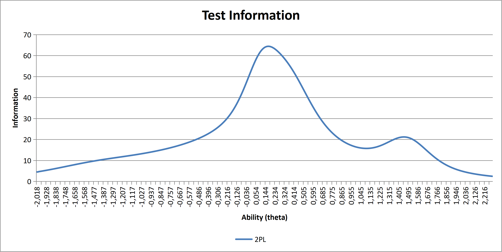
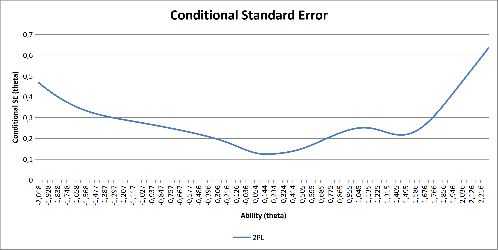
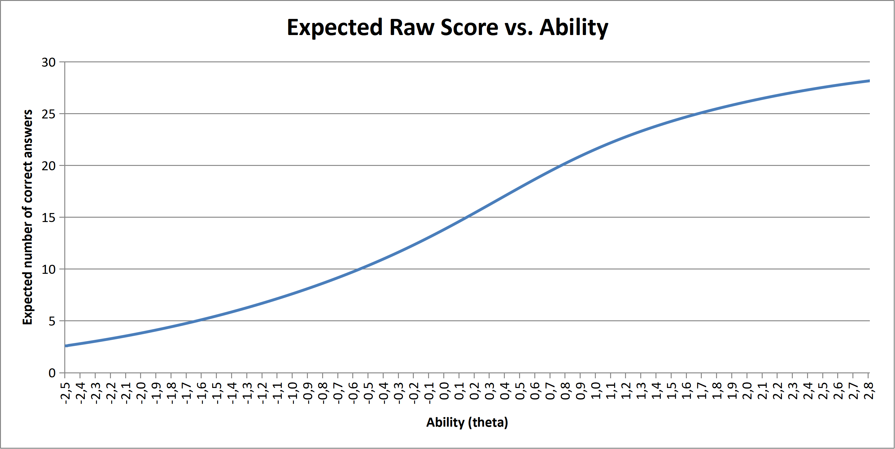
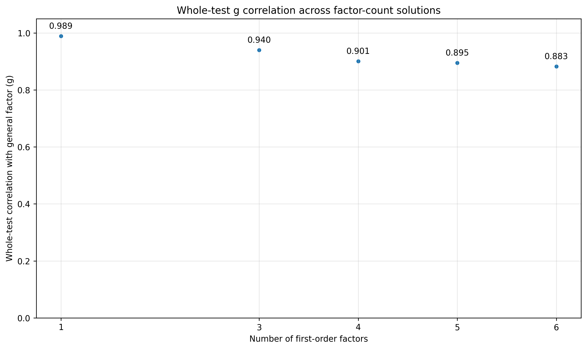
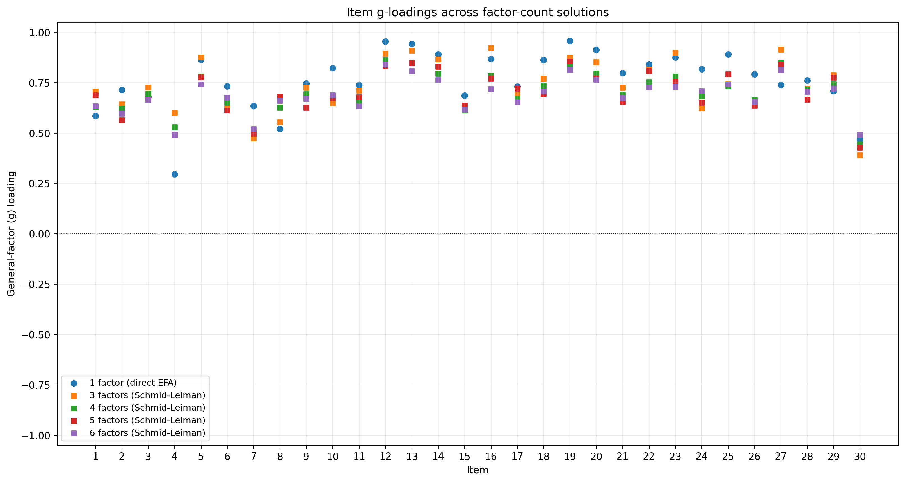

Statistics of SAITO and its Subtests
14 November 2026
Developed in February 2026, SAITO is a short high range I.Q. test designed as an introduction to high range tests for newcomers, while also serving as a formal examination.
The test is untimed and consists of 30 items covering five cognitive domains, including numerical, verbal, logical, abstract, and spatial reasoning. Its format is similar to a condensed version of NOACT and NOFRAT, with each of the five subtests containing six items.
Unlike the other tests available on this website, SAITO can be taken without completing the authentication process. Candidates need only verify an email address to gain access.
While this makes the test more accessible, it also creates a greater opportunity for retakes and cheating, since users can potentially register multiple email addresses. To mitigate this risk, the testing platform incorporates several security mechanisms designed to make cheating difficult. In addition, every submission is manually reviewed by the test author before being included in the dataset, in order to ensure as far as possible that fraudulent attempts are excluded.
Another important consideration is that SAITO is offered free of charge and is open to anyone, including potentially very young participants. As a result, some submissions may not accurately reflect a candidate's true cognitive ability, as individuals may abandon the test prematurely or make avoidable errors due to lack of motivation or seriousness. This tendency can lead to somewhat deflated statistical results, and this should be kept in mind when interpreting the data.
Below are the statistics for SAITO based on a sample of 75 submissions. All statistics have been computed using code written in python or R.
Please review the changelog at the bottom of the page and consult the statistical explanations page for further information.
| Metric | Value |
|---|---|
| Descriptive Statistics | |
| Lowest raw score | 1 |
| Highest raw score | 30 |
| Mean and 95% confidence uncertainty | 14.25 ± 1.97 |
| Median | 12.0 |
| Mode | 6 |
| Raw score standard deviation | 8.49 |
| Quartile deviation | 8.00 |
| Skewness | 0.34 |
| Excess kurtosis | -1.26 |
| Average number of attempts left | 2.93 |
| Reliability | |
| Cronbach's alpha | 0.952 |
| McDonald's omega | 0.950 |
| Split-half reliability index | 0.914 |
| Spearman-Brown corrected reliability | 0.955 |
| Test Characteristics | |
| Range | 30 |
| Resolution | 8.00 |
| Sample-dependent hardness | 0.60 |
| Sample-independent hardness | 0.45 |
| Overall test complexity | 0.46 |
| Standard error of measurement (raw score) | 1.87 |
| Metric | Value |
|---|---|
| Item Classification | |
| Number of items | 30 |
| Good items | 25 |
| Average items | 4 |
| Suspicious items | 1 |
| Bad items | 0 |
| Unsolved items | 0 |
| Quality Estimates in Percentage | |
| Overall quality | 81.0 |
| Abstract subtest quality | 78.4 |
| Numerical subtest quality | 88.2 |
| Verbal subtest quality | 82.8 |
| Spatial subtest quality | 77.8 |
| Logical subtest quality | 74.7 |
| Overal Quality in the 130 to 150 I.Q. range | 82.8 |
| Overal Quality in the 140 to 160 I.Q. range | 79.2 |
| Overal Quality in the 150 to 170 I.Q. range | 66.6 |
| Metric | Value |
|---|---|
| General data | |
| Number of authenticated candidates | 27 |
| Youngest candidate in years | 17 |
| Oldest candidate in years | 76 |
| Mean age in years | 38.0 |
| Median age in years | 35.5 |
| Age standard deviation in years | 16.5 |
| Percentage of males | 96.3 |
| Percentage of females | 3.7 |
| Percentage classified as unknown/other sex | 0.0 |
| Correlation between age and raw score | -0.017 |
| Correlation between number of tests taken and raw score | 0.253 |
| Candidates by Country, listed only if more than 1 | |
| China | 5 |
| Italy | 3 |
| Spain | 2 |
| United States of America | 2 |
Correlations between SAITO and Other Tests
Correlations are computed between the raw score on the SAITO and the raw scores on other tests, except in the case of standardized tests, such as the WAIS, where correlations are computed between the raw SAITO score and the standardized I.Q. score. Values are displayed only if the number of score pairs is greater than 2. This information is only available from authenticated candidates whose previous test scores are known.
| Test Name | Author(s) | Spearman ρ | Pearson r | P-value for r | Pairs |
|---|---|---|---|---|---|
| Analytical Reasoning Test - ART | J. Dorsey | 1.000 | 1.000 | 4 | |
| Silent Numbers | J. Li | 1.000 | 1.000 | 3 | |
| Analytiq-50 | N. Joshi | 1.000 | 1.000 | 3 | |
| SRA33 - Spatial Reasoning Assessment 33 | T. Prousalis | 1.000 | 0.993 | 3 | |
| SPUTNIK Fullscale Intelligence Test | IQexams | 1.000 | 0.991 | 3 | |
| DO-S-32 | M.D. Chau | 1.000 | 0.988 | 3 | |
| Orion - International Contest 2021 | T. Prousalis | 1.000 | 0.973 | 4 | |
| Problems In Gentle Slopes of the third degree | P. Cooijmans | 1.000 | 0.973 | 4 | |
| OMEGA | IQexams | 1.000 | 0.971 | 3 | |
| The Phi Test | T. Prousalis | 1.000 | 0.967 | 3 | |
| InFusion Test | M. Scillitani | 1.000 | 0.967 | 4 | |
| VRA 50 | T. Prousalis | 1.000 | 0.954 | 3 | |
| First Association Test | M. Scillitani | 1.000 | 0.945 | 3 | |
| ChronIQ | M. Lunardini / J. Gordon | 1.000 | 0.933 | 3 | |
| The Smell Test | P. Cooijmans | 0.949 | 0.981 | 4 | |
| The Nemesis Test | P. Cooijmans | 0.949 | 0.981 | 4 | |
| Genius Association Test | P. Cooijmans | 1.000 | 0.929 | 3 | |
| FNT-10 TEST | X. Li | 1.000 | 0.923 | 3 | |
| The Piper's Test | P. Cooijmans | 0.949 | 0.962 | 4 | |
| INSC 2019 | T. Prousalis | 1.000 | 0.904 | 0.035 | 5 |
| NEAITO Verbal Subtest | M.-A. Nydegger | 0.927 | 0.964 | 1.14e-04 | 8 |
| A Paranoiac's Torture - Intelligence Test Utilizing Diabolic Exactitude | P. Cooijmans | 0.894 | 0.980 | 0.003 | 5 |
| NOFRAT | M.-A. Nydegger | 0.932 | 0.929 | 2.94e-04 | 9 |
| Tractatus Numericus 2 | T. Prousalis | 1.000 | 0.851 | 3 | |
| Cooijmans Intelligence Test - Form 3E | P. Cooijmans | 0.955 | 0.894 | 0.007 | 7 |
| Esoterica | M. Predavec | 0.866 | 0.982 | 3 | |
| Strict Logic Sequence Examination II - SLSE II | J. Wai | 0.941 | 0.898 | 0.015 | 6 |
| TetrastIQ Light | G. Garofalo | 1.000 | 0.836 | 3 | |
| International Numerical Reasoning Contest 2018 | T. Prousalis | 0.866 | 0.961 | 3 | |
| Serendipity | D. Kutle | 0.866 | 0.961 | 3 | |
| Tang | H. Chen | 1.000 | 0.826 | 0.085 | 5 |
| Numina 4D | L. Smith | 0.866 | 0.956 | 3 | |
| NOCTAE Numerical Subtest | M.-A. Nydegger | 0.906 | 0.912 | 3.61e-05 | 12 |
| Associative LIMIT | P. Cooijmans | 0.900 | 0.916 | 0.029 | 5 |
| Two-Thirds InFusion | M. Scillitani | 0.949 | 0.866 | 4 | |
| Hexa | J. Dorsey | 0.866 | 0.945 | 3 | |
| LA24 Test | C. Backlund | 0.866 | 0.945 | 3 | |
| CEREBRIQ | A. Leggieri | 0.949 | 0.852 | 4 | |
| NOCTAE | M.-A. Nydegger | 0.942 | 0.848 | 4.98e-04 | 12 |
| NAITOR | M.-A. Nydegger | 0.846 | 0.940 | 5.68e-07 | 14 |
| Medius Cifra Abstrusa | A. Udriste | 0.866 | 0.918 | 3 | |
| NEAITO | M.-A. Nydegger | 0.867 | 0.916 | 0.001 | 8 |
| NAITOR Spatial Subtest | M.-A. Nydegger | 0.913 | 0.858 | 8.70e-05 | 14 |
| NOACT Abstract Subtest | M.-A. Nydegger | 0.784 | 0.971 | 1.61e-07 | 12 |
| NOFRAT Abstract Subtest | M.-A. Nydegger | 0.856 | 0.897 | 0.001 | 9 |
| NAITOR Numerical Subtest | M.-A. Nydegger | 0.825 | 0.925 | 2.21e-06 | 14 |
| CAISO Logical Subtest | M.-A. Nydegger | 0.940 | 0.805 | 0.053 | 6 |
| SAITO Numerical Subtest | M.-A. Nydegger | 0.827 | 0.918 | 1.60e-11 | 27 |
| NOCTAE Abstract Subtest | M.-A. Nydegger | 0.911 | 0.831 | 8.06e-04 | 12 |
| CAISO Spatial Subtest | M.-A. Nydegger | 0.955 | 0.786 | 0.064 | 6 |
| SAITO Logical Subtest | M.-A. Nydegger | 0.837 | 0.902 | 1.35e-10 | 27 |
| Dragon Ball Test | J. Li | 0.866 | 0.866 | 3 | |
| Long Duration Spatial Exam | IQexams | 0.866 | 0.866 | 3 | |
| ENSDT 20 | M. Ripa | 0.866 | 0.866 | 3 | |
| Eclipses | M. Scillitani | 0.866 | 0.866 | 3 | |
| OXYGENA Test | C. Backlund | 0.866 | 0.866 | 3 | |
| Wechsler Adult Intelligence Scale (aggregate) | D. Wechsler | 0.886 | 0.825 | 0.043 | 6 |
| NEAITO Numerical Subtest | M.-A. Nydegger | 0.794 | 0.913 | 0.002 | 8 |
| Dicing with death | P. Cooijmans | 0.800 | 0.907 | 4 | |
| NVRA 80 | T. Prousalis | 0.800 | 0.905 | 4 | |
| NOFRAT Numerical Subtest | M.-A. Nydegger | 0.834 | 0.861 | 0.003 | 9 |
| CAISO | M.-A. Nydegger | 0.765 | 0.915 | 0.011 | 6 |
| Abstract Reasoning Test - ART | D. Kutle | 0.889 | 0.787 | 4 | |
| CAISO Verbal Subtest | M.-A. Nydegger | 0.731 | 0.940 | 0.005 | 6 |
| Malaki Test | C. Backlund | 0.866 | 0.803 | 3 | |
| NOAIS2 Spatial Subtest | M.-A. Nydegger | 0.800 | 0.866 | 0.058 | 5 |
| Numerologica | A. Udriste | 0.800 | 0.863 | 4 | |
| SAITO Spatial Subtest | M.-A. Nydegger | 0.882 | 0.776 | 1.94e-06 | 27 |
| NAITOR Verbal Subtest | M.-A. Nydegger | 0.721 | 0.929 | 1.62e-06 | 14 |
| SAITO Verbal Subtest | M.-A. Nydegger | 0.762 | 0.884 | 9.51e-10 | 27 |
| Verba 66 | M. Predavec | 0.868 | 0.775 | 0.070 | 6 |
| NAITOR Abstract Subtest | M.-A. Nydegger | 0.786 | 0.852 | 1.08e-04 | 14 |
| CAISO Numerical Subtest | M.-A. Nydegger | 0.731 | 0.901 | 0.014 | 6 |
| The Aion Test | C. Backlund | 0.866 | 0.756 | 3 | |
| Introgers | M. Scillitani | 0.866 | 0.756 | 3 | |
| Numerus Light 2 | I. Ivec | 0.730 | 0.890 | 0.043 | 5 |
| NAIT | M.-A. Nydegger | 0.771 | 0.841 | 0.002 | 10 |
| Silent Spatial 40 | J. Li | 0.800 | 0.805 | 4 | |
| Einplex | I. Ivec | 0.837 | 0.767 | 0.016 | 9 |
| SAITO Abstract Subtest | M.-A. Nydegger | 0.789 | 0.815 | 2.26e-07 | 27 |
| NAIT Spatial Subtest | M.-A. Nydegger | 0.724 | 0.879 | 8.14e-04 | 10 |
| NOACT Verbal Subtest | M.-A. Nydegger | 0.683 | 0.918 | 2.55e-05 | 12 |
| Numerus Ultrafun | I. Ivec | 0.865 | 0.733 | 0.159 | 5 |
| CAISO Abstract Subtest | M.-A. Nydegger | 0.765 | 0.833 | 0.039 | 6 |
| Russian Doll | M.D. Chau | 0.866 | 0.731 | 3 | |
| Cooijmans Intelligence Test - Form 4E | P. Cooijmans | 0.866 | 0.731 | 3 | |
| Nydegger Online Automatic Intelligence Scale - Form 1 | M.-A. Nydegger | 0.872 | 0.712 | 0.178 | 5 |
| NEAITO Abstract Subtest | M.-A. Nydegger | 0.858 | 0.725 | 0.042 | 8 |
| VerbaNum | N. Joshi | 0.775 | 0.801 | 4 | |
| VGT-F | T. Prousalis | 0.806 | 0.765 | 0.077 | 6 |
| Levant | D. Kutle | 0.894 | 0.676 | 0.210 | 5 |
| Numerus Strictus Logicae 36 | A. Udriste | 0.800 | 0.770 | 0.128 | 5 |
| ZD Legenda Test | C. Backlund | 0.770 | 0.776 | 0.070 | 6 |
| SPEED | I. Ivec | 0.632 | 0.913 | 4 | |
| Narcissus' last stand | P. Cooijmans | 0.632 | 0.910 | 4 | |
| Numeric Inspiration Test | M. Wu | 0.821 | 0.710 | 0.179 | 5 |
| Figurines | M. Scillitani | 0.707 | 0.821 | 0.089 | 5 |
| NAIT Verbal Subtest | M.-A. Nydegger | 0.715 | 0.810 | 0.004 | 10 |
| Verbal Test of Pattern Recognition | A. Udriste | 0.735 | 0.789 | 0.062 | 6 |
| NOFRAT Spatial Subtest | M.-A. Nydegger | 0.792 | 0.728 | 0.026 | 9 |
| NOAIS2 Abstract Subtest | M.-A. Nydegger | 0.794 | 0.724 | 0.104 | 6 |
| NEAITO Logical Subtest | M.-A. Nydegger | 0.846 | 0.663 | 0.073 | 8 |
| TRICKY 7 | A. Toliopoulos | 0.866 | 0.640 | 3 | |
| NOACT | M.-A. Nydegger | 0.585 | 0.919 | 2.41e-05 | 12 |
| Calculus Luminis Mensura | A. Udriste | 0.714 | 0.789 | 0.062 | 6 |
| NAITOR Logical Subtest | M.-A. Nydegger | 0.641 | 0.854 | 1.03e-04 | 14 |
| Fair Original Test of Ability - FORTY | J. Dorsey | 0.816 | 0.662 | 4 | |
| Morphic Verbal Associations | A. Udriste | 0.763 | 0.712 | 0.177 | 5 |
| LSHR | I. Ivec | 0.500 | 0.971 | 3 | |
| Numerus Delight | I. Ivec | 0.738 | 0.728 | 4 | |
| NOACT Logical Subtest | M.-A. Nydegger | 0.572 | 0.889 | 1.09e-04 | 12 |
| NEAITO Spatial Subtest | M.-A. Nydegger | 0.617 | 0.836 | 0.010 | 8 |
| Spatial Assessment Test | A. Udriste / M.-A. Nydegger | 0.721 | 0.731 | 0.062 | 7 |
| NIT Abstract | M.-A. Nydegger | 0.657 | 0.794 | 0.059 | 6 |
| NOCTAE Spatial Subtest | M.-A. Nydegger | 0.818 | 0.629 | 0.029 | 12 |
| Gordian Knot | T. Prousalis | 0.655 | 0.789 | 0.020 | 8 |
| Lieshout International Mesospheric Intelligence Test | P. Cooijmans | 0.738 | 0.703 | 4 | |
| LSHR Light | I. Ivec | 0.731 | 0.693 | 0.038 | 9 |
| VRA-F | T. Prousalis | 0.500 | 0.924 | 3 | |
| The Alchemist Test | A. El Husseini | 0.632 | 0.777 | 4 | |
| ARA | T. Prousalis | 0.703 | 0.705 | 0.184 | 5 |
| Logica Rigor Numerorum | A. Udriste | 0.600 | 0.788 | 4 | |
| Problems In Gentle Slopes of the second degree | P. Cooijmans | 0.632 | 0.743 | 4 | |
| Algebrica | M. Predavec | 0.667 | 0.683 | 0.204 | 5 |
| MCST 32 | P.L. Miranda | 0.551 | 0.789 | 0.062 | 6 |
| OVAT 33 | M.-A. Nydegger | 0.654 | 0.679 | 0.044 | 9 |
| Alphabet | J. Dorsey | 0.855 | 0.477 | 0.232 | 8 |
| Tetragram | G. Garofalo | 0.632 | 0.694 | 4 | |
| International Spatial Reasoning Contest 2018 / SEE30 | T. Prousalis | 0.667 | 0.653 | 0.111 | 7 |
| ZUN Test | C. Backlund | 0.500 | 0.817 | 3 | |
| NOAIS2 Logical Subtest | M.-A. Nydegger | 0.718 | 0.595 | 0.290 | 5 |
| Numerus Light | I. Ivec | 0.574 | 0.739 | 0.093 | 6 |
| NOACT Numerical Subtest | M.-A. Nydegger | 0.466 | 0.845 | 5.44e-04 | 12 |
| Arete | A. Toliopoulos | 0.500 | 0.789 | 3 | |
| Logical chains | M.D. Chau | 0.410 | 0.875 | 0.052 | 5 |
| Logos Test - VC 2026 | T. Prousalis | 0.657 | 0.623 | 0.186 | 6 |
| X&Y | P.L. Miranda | 0.632 | 0.643 | 4 | |
| Road to Damascus | D. Kutle | 0.585 | 0.688 | 0.131 | 6 |
| Nydegger Online Automatic Intelligence Scale - Form 2 | M.-A. Nydegger | 0.600 | 0.668 | 4 | |
| ARI8MOI | A. Toliopoulos | 0.500 | 0.756 | 3 | |
| Numerical section of The Marathon Test | P. Cooijmans | 0.600 | 0.651 | 4 | |
| Reduction Riddles | J. Dorsey | 0.652 | 0.598 | 0.210 | 6 |
| NAIT Numerical Subtest | M.-A. Nydegger | 0.517 | 0.723 | 0.018 | 10 |
| NIT Verbal | M.-A. Nydegger | 0.718 | 0.509 | 0.381 | 5 |
| MCST 40 | P.L. Miranda | 0.700 | 0.520 | 0.370 | 5 |
| Spectacular Reasoning Assessment - SPECTRA | J. Dorsey | 0.551 | 0.667 | 0.148 | 6 |
| High Range Cognitive Ability Scale - HRCAS | M.-A. Nydegger | 0.600 | 0.614 | 0.270 | 5 |
| The Sargasso Test | P. Cooijmans | 0.545 | 0.666 | 0.102 | 7 |
| Death Numbers | M. Wu | 0.632 | 0.578 | 4 | |
| Hat-triq | A. Andersson | 0.564 | 0.631 | 0.253 | 5 |
| N-World | M. Wu | 0.553 | 0.635 | 0.250 | 5 |
| INSC 2024 - NGTF | T. Prousalis | 0.638 | 0.537 | 0.272 | 6 |
| LAPT | C. Backlund | 0.541 | 0.631 | 0.253 | 5 |
| The Pirate Test | D. Kutle | 0.688 | 0.470 | 0.424 | 5 |
| NAIT Abstract Subtest | M.-A. Nydegger | 0.591 | 0.567 | 0.087 | 10 |
| NIT Spatial | M.-A. Nydegger | 0.400 | 0.720 | 4 | |
| Numericore | D. Fourie | 0.404 | 0.703 | 0.078 | 7 |
| NPRA-R | T. Prousalis | 0.527 | 0.570 | 0.316 | 5 |
| Simtollect | I. Ivec | 0.224 | 0.874 | 0.053 | 5 |
| 9I6 Test | L. Dubois | 0.500 | 0.596 | 3 | |
| NIT-Form 1 | M.-A. Nydegger | 0.400 | 0.685 | 4 | |
| NAIT Logical Subtest | M.-A. Nydegger | 0.568 | 0.495 | 0.146 | 10 |
| Backspace | IQexams | 0.500 | 0.554 | 3 | |
| FREE Fall | I. Ivec | 0.568 | 0.486 | 0.185 | 9 |
| Arcanum | D. Kutle | 0.785 | 0.262 | 0.571 | 7 |
| Numerus Classic | I. Ivec | 0.316 | 0.729 | 4 | |
| PATMOS | D. Kutle | 0.574 | 0.461 | 0.434 | 5 |
| Strict Logic Spatial Examination 48 - SLSE 48 | J. Wai | 0.500 | 0.526 | 3 | |
| Online Advanced Spatial Intelligence Scale - OASIS | J. Dorsey | 0.457 | 0.565 | 0.089 | 10 |
| Test of the Beheaded Man | P. Cooijmans | 0.300 | 0.718 | 0.172 | 5 |
| International Numerical Sequences Contest 2017 / NPRA-F | T. Prousalis | 0.554 | 0.454 | 0.366 | 6 |
| Synthesis Numerospatialis | A. Udriste | 0.500 | 0.500 | 3 | |
| Panthera Test | C. Backlund | 0.500 | 0.500 | 3 | |
| NOAIS2 Numerical Subtest | M.-A. Nydegger | 0.553 | 0.437 | 0.462 | 5 |
| XVLingua | M. Predavec | 0.625 | 0.358 | 0.554 | 5 |
| Comprehensive Spatial Mental Inspection - COSMIC | J. Dorsey | 0.401 | 0.565 | 0.089 | 10 |
| Test of Interpretive Power | G. A. Grove | 0.500 | 0.454 | 3 | |
| Strict Logic Sequence Examination I - SLSE I | J. Wai | 0.482 | 0.447 | 0.266 | 8 |
| Lux 25 | J. Betts | 0.544 | 0.382 | 4 | |
| Numerus | I. Ivec | 0.466 | 0.456 | 0.217 | 9 |
| Major Self-Assessment of Intelligence - MOSAIC | J. Dorsey | 0.582 | 0.317 | 0.541 | 6 |
| Echo Numbers | M. Scillitani | 0.500 | 0.387 | 3 | |
| Three Sonnets | H. Siemens | 0.389 | 0.486 | 4 | |
| Triplex | I. Ivec | 0.456 | 0.416 | 0.485 | 5 |
| Standard Intellectual Measurement - STADIUM | J. Dorsey | 0.500 | 0.371 | 3 | |
| Intense Gradient Instrument of Reasoning - IGNITER | J. Dorsey | 0.553 | 0.302 | 0.621 | 5 |
| Comprehensive Long Assessment Untimed - COLOSSEUM | J. Dorsey | 0.492 | 0.333 | 0.519 | 6 |
| Spatial Relations Latitude - SPIRAL | J. Dorsey | 0.500 | 0.323 | 0.596 | 5 |
| Intellectual Spatial Orientation - ILLUSION | J. Dorsey | 0.356 | 0.451 | 0.191 | 10 |
| The Titan Test | R.K. Hoeflin | 0.500 | 0.254 | 3 | |
| Rising Riddles | J. Dorsey | 0.395 | 0.357 | 0.555 | 5 |
| World Intelligence Test - WIT | J. Betts | 0.374 | 0.302 | 0.510 | 7 |
| PatNum | J. Dorsey | 0.193 | 0.470 | 0.170 | 10 |
| Triplex Light | I. Ivec | 0.272 | 0.380 | 0.353 | 8 |
| NOAIS2 Verbal Subtest | M.-A. Nydegger | 0.318 | 0.311 | 0.498 | 7 |
| AdSub | J. Dorsey | 0.385 | 0.203 | 0.629 | 8 |
| ANOTELEIA 44 | M. Predavec | 0.289 | 0.290 | 0.636 | 5 |
| G-Puzzles | C. Backlund | 0.258 | 0.309 | 4 | |
| Tetraktys - NC 2026 | T. Prousalis | 0.359 | 0.166 | 0.790 | 5 |
| QuantIQ V2 | K.E. Ferrell | 0.316 | 0.196 | 4 | |
| Hieroglyphica | M. Predavec | 0.205 | 0.252 | 0.682 | 5 |
| NIT Numerical | M.-A. Nydegger | 0.257 | 0.191 | 0.716 | 6 |
| Psychometrically Activated Grids Acerbate Neuroticism | P. Cooijmans | 0.000 | 0.447 | 3 | |
| International Verbal Reasoning Contest 2018 | T. Prousalis | 0.270 | 0.117 | 0.802 | 7 |
| Tractatus Numericus | T. Prousalis | 0.200 | 0.089 | 4 | |
| Asterix | J. Betts | 0.062 | 0.205 | 0.697 | 6 |
| LRA | T. Prousalis | 0.000 | 0.241 | 4 | |
| Cooijmans Intelligence Test 5 | P. Cooijmans | -0.051 | 0.225 | 0.716 | 5 |
| PatLet | J. Dorsey | 0.028 | 0.124 | 0.842 | 5 |
| Only Idiots Test | P. Cooijmans | 0.000 | 0.143 | 3 | |
| International Verbal Reasoning Contest 2017 / VCAA | T. Prousalis | 0.100 | 0.005 | 0.993 | 5 |
| Numeralica | A. Udriste | 0.000 | 0.000 | 4 | |
| MultDiv | J. Dorsey | 0.000 | 0.000 | 1.000 | 7 |
| Compilation of Excellent Spatial Abilities - CELESTIAL | J. Dorsey | 0.000 | 0.000 | 4 | |
| Mental Examination of Reasoning - METEOR | J. Dorsey | 0.000 | -0.056 | 0.916 | 6 |
| LDA-SWaN | G. Lombardi | -0.051 | -0.054 | 0.931 | 5 |
| Replacement Riddles | J. Dorsey | 0.000 | -0.189 | 3 | |
| ASMuDi | J. Dorsey | -0.147 | -0.099 | 0.832 | 7 |
| ASIT | P.L. Miranda | 0.000 | -0.277 | 3 | |
| Qoymans Multiple-Choice #5 | P. Cooijmans | 0.000 | -0.351 | 3 | |
| Logima Strictica 36 - LS 36 | R. Lato | -0.211 | -0.208 | 4 | |
| Alliteration Analogies Assessment | J. Dorsey | -0.272 | -0.174 | 4 | |
| Lexiq | N. Soulios | -0.400 | -0.287 | 4 | |
| NIT Logical | M.-A. Nydegger | -0.300 | -0.501 | 0.390 | 5 |
| Intense Mental Abilities Grand Exam - IMAGE | J. Dorsey | -0.393 | -0.411 | 0.418 | 6 |
| X10 Test | C. Backlund | -0.500 | -0.327 | 3 | |
| The Marathon Test | P. Cooijmans | -0.500 | -0.371 | 3 | |
| Amathematical Patterns Test | A. Udriste | -0.500 | -0.500 | 3 | |
| Visual Image Pattern Sequence I - VIPS I | A.A. Gangvik | -0.526 | -0.598 | 0.287 | 5 |
| Rhyming Riddles | J. Dorsey | -0.577 | -0.577 | 4 | |
| JCTI/TRI-52 | X. Jouve | -0.632 | -0.524 | 4 | |
| Mathema | J. Betts | -0.671 | -0.644 | 0.085 | 8 |
| AGLT | A.A. Gangvik | -0.866 | -0.739 | 0.154 | 5 |
| JINA Test | T. Shao | -0.866 | -0.866 | 3 | |
| Buckets of Words | D. Kutle | -0.866 | -0.866 | 3 | |
| Logica Verbalis | T. Prousalis | -0.866 | -0.988 | 3 |
| Metric | Value |
|---|---|
| Peak Measurement | |
| Number of intervals | 2 |
| Minimum acceptable S.E.M. in I.Q. points | 5 |
| I.Q. at start of main interval | 114.4 |
| I.Q. at end of main interval | 152.3 |
| Peak information for main interval | 16.36 |
| Lowest S.E.M for main interval | 2.68 |
| I.Q. at lowest S.E.M for main interval | 145.3 |
| Latent Ability (Theta) | |
| Mean EAP theta | 0.000 |
| Lowest EAP theta | -2.491 |
| Highest EAP theta | 2.820 |
| EAP theta at start of acceptable S.E.M. main interval | -1.598 |
| EAP theta at end of acceptable S.E.M. main interval | 1.663 |
Graphs


The graph below, which illustrates the relationship between latent ability (\(\theta\)) and raw scores, represents a general model and cannot be used to estimate the ability of individual candidates. This is because IRT does not base ability estimates on raw scores. Instead, it estimates ability from the individual item responses, taking into account the difficulty and other characteristics of each item.

| Metric | Value |
|---|---|
| g Factor | |
| Estimated g-loading (external) | 0.787 |
| Number of (sub)tests used for the g-loading estimation (score pairs ≥ 4, SAITO subtests excluded) | 174 |
| Estimated g-loading (internal factor analysis) | > 0.88 |
| Corrected Point-Biserial Correlation \(r_{pb}\) | |
| Mean value | 0.602 |
| Lowest item value | 0.200 |
| Highest item value | 0.853 |
| Number of items with very strong discrimination | 10 |
| Number of items with strong discrimination | 16 |
| Number of items with acceptable discrimination | 2 |
| Number of items with weak discrimination | 2 |
| Number of items with very weak (problematic) discrimination | 0 |
| Number of items with insufficient data | 0 |
| Dimensionality | |
| Full test structure | Unidimensional |
| Numerical subtest structure | Unidimensional |
| Verbal subtest structure | Unidimensional |
| Abstract Subtest structure | Unidimensional |
| Logical subtest structure | Unidimensional |
| Spatial subtest structure | Borderline |
| Abstract | Numerical | Verbal | Spatial | Logical | |
|---|---|---|---|---|---|
| Abstract | 1 | 0.805 | 0.761 | 0.744 | 0.776 |
| Numerical | 0.805 | 1 | 0.749 | 0.724 | 0.844 |
| Verbal | 0.761 | 0.749 | 1 | 0.621 | 0.802 |
| Spatial | 0.744 | 0.724 | 0.621 | 1 | 0.653 |
| Logical | 0.776 | 0.844 | 0.802 | 0.653 | 1 |
| Subtest g-loadings | |
|---|---|
| Numerical subtest | 0.915 |
| Logical subtest | 0.898 |
| Abstract subtest | 0.898 |
| Verbal subtest | 0.843 |
| Spatial subtest | 0.772 |
g-loading estimations
The available sample size is currently insufficient to produce reliable internal estimates of g-loadings. Nevertheless, some exploratory results are presented below for informational purposes. A hierarchical factor model incorporating a Schmid-Leiman transformation was fitted to examine the contribution of the general intelligence factor (g) to the overall test and its individual items. The test appears to exhibit a strongly unidimensional structure, with even the exploratory analyses suggesting a dominant single factor. To examine the stability of the factor structure and the sensitivity of the resulting g-loadings to model specification, several models were fitted and compared. These included a direct one-factor exploratory factor analysis (EFA), as well as Schmid-Leiman solutions based on 3, 4, 5, and 6 first-order factors. Solutions involving more than 6 factors could not be obtained due to the occurrence of improper solutions or inadmissible parameter estimates.
Important: The Schmid-Leiman analysis considers solutions with at least 3 first-order factors. A 2 factors solution is excluded because the second-order general factor is not uniquely defined when only two first-order factors are present.
| Metric | Value |
|---|---|
| Overall test | |
| Estimated internal g-loading | > 0.88 |
| Omega hierarchical (ωh) | 0.978 |
| Omega total (ωt) | 0.978 |
| Factor structure | |
| General factor (PC1) loading | 0.782 |
| PC1 variance explained (tetrachoric) | 0.611 |
| First/second eigenvalue ratio | 8.46 |
| First-order factors retained | 1 |
| Mean correlation between factors | N/A for 1 factor |
| Range of factor correlations | N/A for 1 factor |
Graphs

The 1 factor solution yields an estimate of 0.989. However, this exceptionally high value does not seem reasonable and may be unstable or inflated given the limited sample size.
The 5 factors solution, which yields a test g correlation of 0.895, might appear more plausible, particularly given that the test comprises 5 subtests intended to assess different and more specific abilities. However, the number and apparent content of the subtests do not establish the underlying structure of the test. The abilities actually measured must be inferred from empirical evidence rather than from the apparent content of the test.
In this respect, the high g-loadings observed for the individual subtests (see table at the bottom of the "Construct Validity" tab) raise questions about the extent to which they measure sufficiently distinct abilities to be interpreted as independent domains. Furthermore, the dimensionality analyses indicate that the test as a whole exhibits a predominantly unidimensional structure. Although distinct group abilities may coexist with a general factor, the available results provide limited evidence that the 5 subtests represent 5 clearly differentiated cognitive domains.
The estimated test g correlation decreases as the number of first-order factors increases but the magnitude of this decrease becomes progressively smaller. This pattern might suggest the existence of an asymptote as the number of factors approaches infinity. However, the number of factors is necessarily finite and assuming a very large number of factors is difficult to justify.
Despite these changes in the estimated strength of the general factor, the item-level general-factor loading patterns appear comparatively stable across the solutions. The correlations between the loading vectors of consecutive solutions are presented below.
Correlations between consecutive solutions
| Number of factors | Pearson correlation |
|---|---|
| 3 and 4 | 0.952 |
| 4 and 5 | 0.942 |
| 5 and 6 | 0.936 |
These consistently high correlations indicate that the relative pattern of item-level general-factor loadings changes comparatively little as additional first-order factors are introduced. In other words, although the absolute magnitude of the loadings varies, items with relatively high loadings tend to retain that characteristic across solutions, as do items with relatively low loadings.
The individual item g-loadings do not appear to converge towards particular values as the number of first-order factors increases, as illustrated below. This means that their precise magnitudes cannot be predicted. Nevertheless, the relative differences between items can still provide useful information. For example, items 12, 13, 19 and 20 tend to exhibit comparatively high g-loadings, whereas items 4 and 30 tend to exhibit comparatively low loadings.

For reference, the table below presents the item g-loadings obtained from the one-factor solution.
Item g-loadings
| Item | g-loading |
|---|---|
| 1 | 0.585 |
| 2 | 0.714 |
| 3 | 0.678 |
| 4 | 0.295 |
| 5 | 0.863 |
| 6 | 0.731 |
| 7 | 0.634 |
| 8 | 0.520 |
| 9 | 0.745 |
| 10 | 0.822 |
| 11 | 0.737 |
| 12 | 0.954 |
| 13 | 0.941 |
| 14 | 0.890 |
| 15 | 0.685 |
| 16 | 0.866 |
| 17 | 0.730 |
| 18 | 0.862 |
| 19 | 0.956 |
| 20 | 0.912 |
| 21 | 0.797 |
| 22 | 0.839 |
| 23 | 0.875 |
| 24 | 0.817 |
| 25 | 0.890 |
| 26 | 0.792 |
| 27 | 0.739 |
| 28 | 0.760 |
| 29 | 0.707 |
| 30 | 0.467 |
Changelog
- Corrected an error in the IRT computation and made the section more informative.
- MIRT internal g-loading analysis postponed until the sample size reaches 200.
- Subtest g-loading method changed from PCA to single-factor MINRES factor analysis.
- External g-loading estimation method changed to Cooijmans' method.
- Candidates who did not formally click the "End Test" button on NAIT are now excluded from the statistics.
- Internal g-loading cannot currently be estimated reliably due to the small sample size.
- New rule: candidates cannot abandon the test unless they have lost at least 3 attempts. As a result, some previously "finished" submissions have been reverted to unfinished.
- Fixed: scores from an older version of NGT-F were incorrectly merged with scores from the newer version.
- Corrected point-biserial correlation values are now reported using discrimination categories.